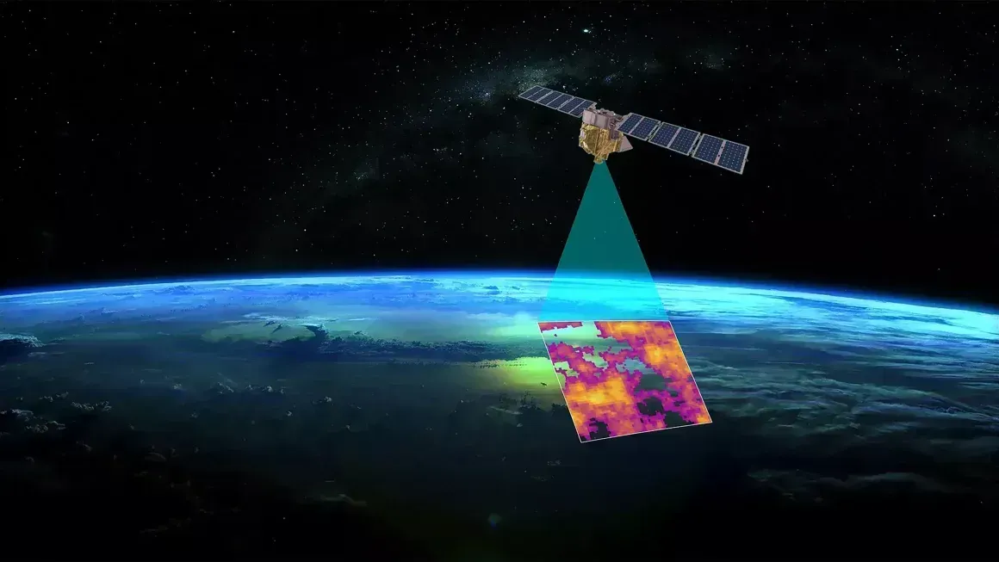

The malware has been codenamed MalTerminal by SentinelOne SentinelLABS research team. The findings were presented at the LABScon 2025 security conference. In a report examining the malicious use of LLMs, the cybersecurity company said AI models are being increasingly used by threat actors for operational support, as well as for embedding them into their tools – an emerging category called LLM-embedded malware that's exemplified by the appearance of LAMEHUG (aka PROMPTSTEAL) and PromptLock.
E responder tudo isso exige uma quantidade enorme de água. O motivo é que os enormes data centers que abastecem os programas de IA precisam ser resfriados com água, para não superaquecerem. E em geral é água potável, para evitar corrosões ou a proliferação de bactérias. A discussão sobre o gasto de água acontece também no Brasil, em meio ao crescimento no número de data centers.
O serviço secreto do governo do Reino Unido, o MI6, está lançando seu próprio portal na dark web — uma parte da internet que só é acessível através de softwares especiais — na esperança de atrair novos espiões online, principalmente na Rússia. A plataforma de mensagens seguras Silent Courier visa fortalecer a segurança nacional facilitando o recrutamento de pessoas pela agência de inteligência, disse o Ministério das Relações Exteriores.
Muito acima da Terra, um satélite de ponta está dando voltas ao redor do planeta 15 vezes por dia. Ele está caçando vazamentos de metano — um gás invisível e superpoluente que está aquecendo o planeta de forma dramática. Suas medições são tão precisas que permitem traçar mapas de calor dos maiores emissores, iluminando todos os locais onde o gás está sendo liberado na atmosfera em taxas alarmantes, sem o conhecimento dos órgãos reguladores, enquanto o planeta ruma para o que cientistas alertam ser impactos irreversíveis das mudanças climáticas.
